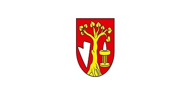

...Per Aspera ad Astra..
Mein Name ist Du≈°an Roh√°r und ich komme aus Teplice üòÑ.
Allerdings nennen mich alle Du≈°ko, kad si Yugo, mogu biti Dule, brate 😉.
Ich bin ein Mensch, der Spaß, Humor – je düsterer, desto besser und Sarkasmus mag.
Ich habe Literatur immer geliebt, in der ich auch an Wettbewerben teilgenommen habe, und Historie, vor allem Geschichte
Militär ist meine Leidenschaft, damit ist auch das Sammeln verbunden, insbesondere die Faleristik,
aber auch Philatelie und Numismatik. Zu den passiven Hobbys gehört der Modellbau, den ich
Es war bezaubernd und lehrte mich auf Details zu konzentrieren. Die daraus gewonnenen Techniken habe ich bei der Renovierung alte Möbel
angewendet. Das Gegenteil davon ist meine Liebe zum Reisen und zum Lernen neuer Dinge, sei es auf
mit dem Motorrad oder Wandern. Generell nehme ich Bewegung als Teil von mir, weil ich gerne spiele
Fußball, und ich hebe am liebsten Gewichte und überwinde mich selbst.
Was meine Natur angeht, bin ich ein verantwortungsbewusster und einfühlsamer Introvertierter, aber ich habe gelernt
auch öffentlich auftreten. Ich glaube jedoch, dass mit den richtigen Leuten alles möglich ist
Manche Dinge müssen separat erledigt werden. Improvisation hat mir in meinem Leben schon geholfen
unzählige Male, zumindest bis er sich das gegebene Wissen so schnell wie möglich aneignete.
Eine Schwäche, mit der ich zu kämpfen habe, ist manchmal zu viel Ungeduld.



- Geboren im besten Jahr; 1988
- Verheirated, Vater von zwei kleinen Teufelchen
- Gemerské Teplice, der Ort, der mich seit meiner Kindheit geprägt hat
- Teplica ist wie deine Schwester, ihr ärgert euch, würdet aber nicht tauschen
- Matura im Jahr 2008
- Erstes slowakisches Gymnasium
- Schöne Erinnerungen an Menschen, mit denen du dort weitermachen kannst, wo du aufgehört hast
- Erfolgreiche Staatsprüfungen im Jahr 2013 im Fach Internationale Beziehungen (Politik Wissenschaft)
- Wahre Freiheit, aber auch Verantwortung
- Erstklassige tschechisch-slowakische Professoren
- Eichler, Laml,
Šmihula, Jaššová,
Hlaváček, Nováčková,
Šír, Juza,
nur eine kleine Liste von vielen, unter deren Leitung ich das Vergnügen
hatte zu studieren - Eine Schule mit Potenzial, die wegen Habgier endete
- Erste Anstellung
- Gute Schule und Erfahrung
- Unvergessliche Schulungen für Prüfungen bei der NBS
- Eine Arbeit, bei der ich gelernt habe, dass alles von den Menschen abhängt,
nach dem Weggang des Vorgesetzten bin ich ebenfalls gegangen
- Seit 2014 mein Exil-Zuhause
- Ort, an dem ich Vater wurde
- Angenehme Kleinstadt, in der sich langsam jeder kennt
- 2014 - 2016
- Erster Job in Österreich
- Arbeit in der Küche mit allem, was dazugehört
- Meine Deutschlehrerin weinte, aus Entsetzen und vor Lachen,
doch ich habe gelernt, unterwegs zu improvisieren und anders über
Dinge nachzudenken (Kleine grüne Kugeln = Erbsen)
- 2018 - 2020
- Technisches Deutsch, viel Spaß, besonders in Kombination mit Dialekt
- Tolle Truppe, mit der ich mich immer noch treffe
- Wieder einmal, harte Arbeit und Nachtschichten können mit den richtigen Leuten Spaß machen
- Eine weitere Schule, wenn auch negativ, in der Verfälschung
von Statistiken und der Schließung des Werk
- 2020 - 2023
- Stärkere Verbindung von manuellen und IT-Fähigkeiten,
für eine größere Einbindung von SAP-Systemen in die Produktionsprozesse - Erste Erfahrungen in der Leitung einer kleinen Gruppe von Mitarbeitern
auf einer unteren Managementebene - Viele richtige Leute, leider auch ein falscher und das war genug
- Neue Herausforderung, über die ich schon lange nachgedacht habe, aber es gab immer
etwas Wichtigeres - Java, HTML, CSS, Git und weitere folgen
- Visual Studio (mein Favorit), IntelliJ IDEA, GitHub, GameMaker Studio
- Bisher ein paar Sachen, die ich gemacht habe und über die ich irgendwann wahrscheinlich lachen werde


{kind=link}
{kind=link}